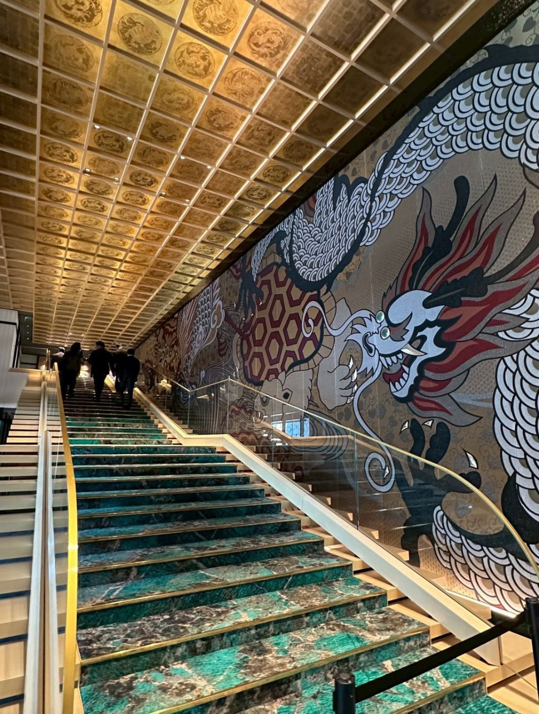
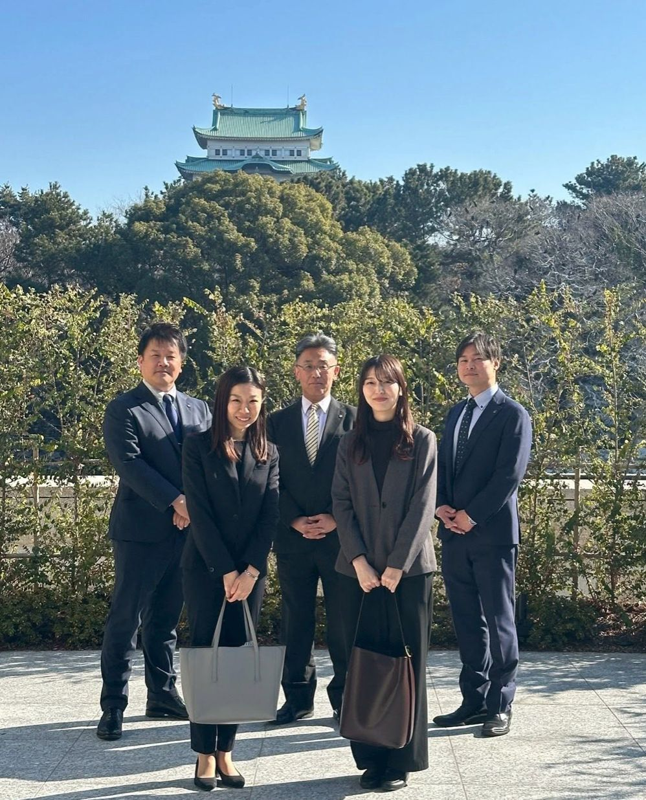

このたび、AWCカレッジ部会の活動として、エスパシオ ナゴヤキャッスルの館内見学を実施いたしました。


営業部長の長谷様にご協力いただき、エントランス、バンケットルーム、ロビーラウンジからレストラン、バー、そして客室まで、館内をくまなくご案内いただきました。
単なる施設の見学ではありません。それぞれの空間にまつわるエピソードや、込められた想いまで、じっくりとお聞きすることができました。同じ空間でも、背景にある物語を知ると、見え方がまるで変わってきます。プロの視点から語られる一つひとつのお話に、参加した先生方も引き込まれていました。
ホテル、ウェディング業界を目指す学生や高校生へ——。今回、先生方が実際に体験したワクワクを、教室でそのまま学生たちへ伝えていただけると信じております。
パンフレットの文字や写真では伝わらない、現場の空気や熱量。それを肌で感じた先生の言葉は、きっと学生たちの心を動かします。先生を通じて、この業界の魅力が次の世代へと広がっていく。カレッジ部会の活動は、そんな連鎖を生み出すための取り組みでもあります。
愛知ウェディング協議会では、会員の皆様にとって意味のある活動・イベントを、理事一同で企画し、実行して参ります。多くの方に参加していただきたいと思うと同時に、会員の皆様からの「こんなことをしたら、更に良い業界になるのでは？」というお声を、心からお待ちしています。
アイデアは、多ければ多いほど、協議会を豊かにします。どんな小さなことでも構いません。どうぞお気軽にご連絡ください！
エスパシオ ナゴヤキャッスルの皆様、そして長谷様、素敵な機会をありがとうございました。
愛知ウェディング協議会 カレッジ部会では、学校との連携・学生の参画を通じて、業界の未来を担う人材とともに歩んでいく取り組みを進めています。